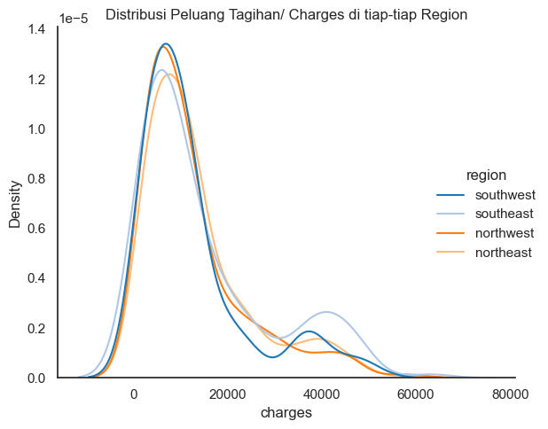
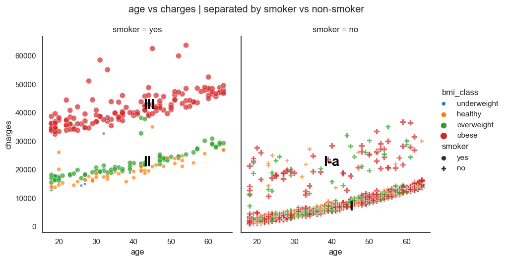
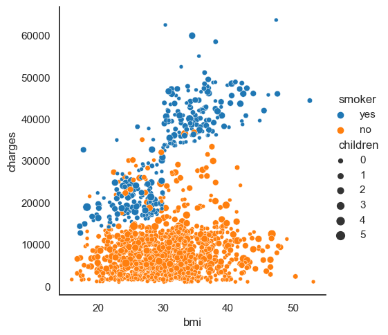
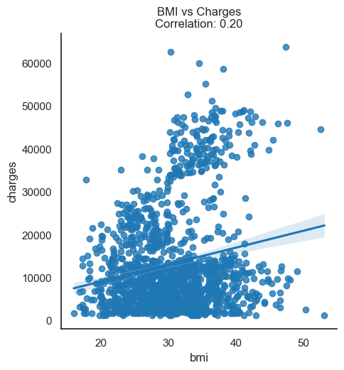
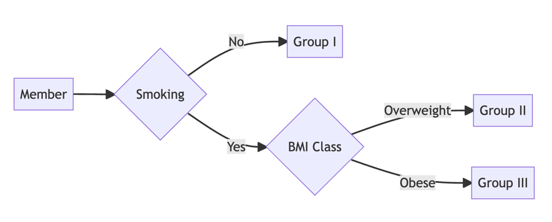

1. Introduction & Business Understanding
Asuransi kesehatan adalah salah satu hal yang patut diperhatikan karena bersangkutan dengan kebutuhan perencanaan masa depan. Pengguna asuransi kesehatan diwajibkan untuk membayar besaran uang secara rutin (premi) kepada pihak perusahaan asuransi. Premi tersebut diolah oleh perusahaan asuransi untuk membayarkan tagihan kesehatan pengguna yang tertanggung. Penentuan nilai premi menjadi tantangan tersendiri bagi pihak asuransi mengingat ada banyak faktor yang dapat mempengaruhi & meningkatkan profil resiko pengguna.
Project ini dibuat untuk menjawab menganalisa variable-variabel yang memiliki hubungan dengan tagihan kesehatan yang diterima oleh setiap pengguna. Anda akan diberikan data yang berisi data personal pengguna seperti umur, gender, tempat tinggal pengguna, banyak anak tertanggung asuransi, nilai bmi, keadaan merokok atau tidaknya pengguna.
Metadata sebagai berikut:
age: umur peserta asuransisex: jenis kelaminbmi: body mass index dari pesertachildren: banyak anak/ tanggungan dari pesertasmoker: apakah peserta perokok/tidakregion: lokasi/ region dari peserta (US)charges: tagihan kesehatan peserta.
# 2. Data Understanding
Importing Library
Importing Dataset
| age | sex | bmi | children | smoker | region | charges | |
|---|---|---|---|---|---|---|---|
| 0 | 19 | female | 27.900 | 0 | yes | southwest | 16884.92400 |
| 1 | 18 | male | 33.770 | 1 | no | southeast | 1725.55230 |
| 2 | 28 | male | 33.000 | 3 | no | southeast | 4449.46200 |
| 3 | 33 | male | 22.705 | 0 | no | northwest | 21984.47061 |
| 4 | 32 | male | 28.880 | 0 | no | northwest | 3866.85520 |
| ... | ... | ... | ... | ... | ... | ... | ... |
| 1333 | 50 | male | 30.970 | 3 | no | northwest | 10600.54830 |
| 1334 | 18 | female | 31.920 | 0 | no | northeast | 2205.98080 |
| 1335 | 18 | female | 36.850 | 0 | no | southeast | 1629.83350 |
| 1336 | 21 | female | 25.800 | 0 | no | southwest | 2007.94500 |
| 1337 | 61 | female | 29.070 | 0 | yes | northwest | 29141.36030 |
1338 rows × 7 columns
1. Analisa Descriptive Statistics
1.1 Rata-rata umur pengguna
- Rerata umur pengguna asuransi adalah 39
1.2. Rata-rata nilai BMI dari pengguna yang merokok
smoker
no 30.651795
yes 30.708449
Name: bmi, dtype: float64- Rerata BMI perokok adalah 30.7, sementara BMI non-perokok adalah 30.65. Tidak banyak perbedaan
1.3. Berapa Rata-rata umur perokok
smoker
no 39.385338
yes 38.514599
Name: age, dtype: float64- Rerata umur orang yang merokok adalah 38.51.
1.4. Berapa rata-rata nilai BMI dari yang Merokok?
smoker
no 30.651795
yes 30.708449
Name: bmi, dtype: float64- Rata-rata nilai
BMIdari perokok adalah 30.71
1.5 Apakah variansi dari data charges perokok dan non-perokok sama?
| var | |
|---|---|
| smoker | |
| no | 35925420.0 |
| yes | 133207311.0 |
smoker
no 100.000001
yes 370.788459
Name: charges, dtype: float64- Variansi perokok dan non perokok sangat berbeda. Nilai variansi
chargesperokok adalah 370% lebih tinggi daripada non-perokok.
1.6. Rata-rata umur perempuan dan laki-laki yang merokok
sex
female 38.608696
male 38.446541
Name: age, dtype: float64- Rerata umur perokok perempuan adalah 38.61, dan laki-laki adalah 38.45.
- Perbedaan rerata umur perokok beda kelamin sangat kecil.
1.7. Mana yang lebih tinggi, rata-rata tagihan kesehatan charges perokok atau non-perokok?
smoker
no 8434.268298
yes 32050.231832
Name: charges, dtype: float64smoker
no 100.000000
yes 380.000146
Name: charges, dtype: float64- Tagihan kesehatan
chargesperokok adalah380%lebih tinggi dibandingkan dengan non-perokok.
1.8. Mana yang lebih tinggi, rata-rata tagihan kesehatan charges perokok yang BMI-nya di atas 25 atau non-perokok yang BMI-nya di atas 25?
smoker
no 8629.589610
yes 35116.909657
Name: charges, dtype: float64- Lebih tinggi tagihan perokok dengan bmi di atas 25, dibandingkan non-perokok dengan bmi di atas 25.
1.9. BMI mana yang lebih tinggi, seorang laki-laki atau perempuan?
sex
female 30.377749
male 30.943129
Name: bmi, dtype: float64- BMI yang lebih tinggi adalah laki-laki, walaupun selisihnya cuma 0.6 kilogram saja. Sangat kecil.
1.10. BMI mana yang lebih tinggi, seorang perokok atau non-perokok?
smoker
no 30.651795
yes 30.708449
Name: bmi, dtype: float64BMIperokok lebih tinggi daripada non-perokok, namun selisihnya sangatlah kecil (0.05 kilogram saja)
2. Analisa Variable Kategorik (PMF)
2.1. Gender mana yang memiliki tagihan paling tinggi? Female / Male?
sex
female 12569.578844
male 13956.751178
Name: charges, dtype: float64- Gender laki-laki memiliki rerata tagihan kesehatan paling tinggi.
2.2. Distribusi peluang tagihan di tiap-tiap region
region
northeast 0.242152
northwest 0.242900
southeast 0.272048
southwest 0.242900
Name: charges, dtype: float64- Distribusi peluang tagihan masing-masing region terlihat tidak jauh berbeda
2.3. Apakah setiap region memiliki proporsi data banyak orang yang sama?
region
northeast 24.215247
northwest 24.289985
southeast 27.204783
southwest 24.289985
Name: charges, dtype: float64- Berdasarkan distribusi statistik di atas, proporsi data banyak orang di tiap region mirip satu sama lain, dengan perbedaan sangat sedikit (maksimal 12%).
2.4. Mana yang lebih tinggi, proporsi perokok/ non-perokok?
smoker
no 1064
yes 274
Name: smoker, dtype: int64- Lebih besar proporsi data non-perokok (80%) dibandingkan perokok (20%).
2.5. Berapa peluang seseorang tersebut adalah perempuan bila diketahui dia adalah perokok?
Peluang seseorang adalah perempuan bila diketahui dia adalah perokok, berarti menggunakan ruang sample semua pengguna yang merokok, kemudian dicari peluang perempuan.
\[ P(perempuan|perokok)=\frac {n(perempuan \cap perokok)} {n(perokok)} \]
Show Code
115Show Code
42.0- Bila seseorang merokok, maka 42% seseorang tersebut adalah perempuan.
2.6. Berapa peluang seseorang tersebut adalah laki-laki, bila diketahui dia adalah perokok?
Menggunakan prinsip yang sama, maka peluang seseorang tersebut laki-laki bila diketahui dia adalah perokok, adalah 1- peluang_perempuan_bila_perokok. 1-0.42 = 0.58 atau 58%.
Dapat dibuktikan sebagai berikut
Show Code
1592.7. Bagaimana bentuk distribusi peluang besar tagihan dari tiap-tiap region?
Show Code

- Pada rentang charges di bawah 30,000, distribusi peluang setiap region relatif seimbang/mirip. Namun ketika nilai charges di atas 30,000 nilai peluang relatif berbeda satu sama lain region, terutama southeast region.
3. Analisa Variabel Kontinu
3.1. Mana yang lebih mungkin terjadi?
“Kejadian yang Lebih mungkin terjadi” adalah kejadian yang memiliki nilai peluang yang lebih besar dibandingkan kejadian lainnya. Untuk mendapatkan hal tersebut, maka dapat dilakukan perhitungan peluang masing-masing kejadian (a dan b), kemudian dibandingkan.
- Seseorang dengan BMI di atas 25 mendapatkan tagihan kesehatan di atas 16.7k?
Ada dua kondisi berdasarkan kejadian a, yakni: - Seseorang dengan BMI>25 - Seseorang dengan charges > 16.7k
Maka, peluang seseorang dengan kondisi BMI > 25 mendapatkan tagihan di atas 16.7K adalah:
Show Code
283Show Code
NameError: name 'n_charges_diatas167k_bila_bmidiatas25' is not defined- Seseorang dengan BMI di bawah 25 mendapatkan tagihan kesehatan di atas 16.7k?
Show Code
51Show Code
Peluang seseorang dengan BMI di atas 25 mendapatkan tagihan
di atas 16.7k adalah sebesar 21.0%- Peluang kejadian a sebesar 26%, lebih besar dibandingkan peluang b 21%. Sehingga kejadian a, yakni Seseorang dengan BMI di atas 25 lebih mungkin mendapatkan tagihan kesehatan sebesar 16.7k dibandingkan ketika BMI di bawah 25
3.2. Mana yang lebih mungkin terjadi?
- Seseorang perokok dengan BMI di atas 25 mendapatkan tagihan kesehatan di atas 16.7k?
Terdapat tiga kondisi, yakni: - Perokok dan BMI di atas 25 - Tagihan kesehatan 16.7k
Sehingga perhitungan peluang dapat dilakukan sebagai berikut:
Show Code
219Show Code
215Show Code
Peluang seseorang dengan BMI di atas 25 mendapatkan tagihan
di atas 16.7k adalah sebesar 98.0%- Seseorang non-perokok dengan BMI di atas 25 mendapatkan tagihan kesehatan di atas 16.7k?
Show Code
872Show Code
68Show Code
Peluang seseorang dengan BMI di atas 25 mendapatkan tagihan
di atas 16.7k adalah sebesar 8.0%- Peluang seorang perokok dengan BMI di atas 25 mendapatkan tagihan di atas 16.7k adalah sebesar 98%. Sedangkan peluang non-perokok dengan BMI di atas 25 mendapatkan tagihan di atas 16.7k adalah sebesar 8%.
4. Analisa Korelasi Variabel
Analisa korelasi tagihan kesehatan dengan minimal 2 variabel lainnya.
Berdasarkan beragam variabel yang tersedia, penulis memutuskan untuk melihat hubungan tagihan/ charges dengan tiga variabel lain yakni:
- Hubungan charges dengan umur (age)
- HUbungan charges dengan status perokok/ non-perokok
- Hubungan charges dengan BMI/ kelas BMI
Untuk mempermudah analisis, nilai BMI akan dikelompokkan berdasarkan tabel di bawah: https://www.cdc.gov/healthyweight/assessing/bmi/adult_bmi/index.html
| BMI | Weight Status |
|---|---|
| Below 18.5 | Underweight |
| 18.5 – 24.9 | Healthy Weight |
| 25.0 – 29.9 | Overweight |
| 30.0 and Above | Obesity |
Show Code
| age | sex | bmi | children | smoker | region | charges | bmi_class | |
|---|---|---|---|---|---|---|---|---|
| 0 | 19 | female | 27.900 | 0 | yes | southwest | 16884.92400 | overweight |
| 1 | 18 | male | 33.770 | 1 | no | southeast | 1725.55230 | obese |
| 2 | 28 | male | 33.000 | 3 | no | southeast | 4449.46200 | obese |
| 3 | 33 | male | 22.705 | 0 | no | northwest | 21984.47061 | healthy |
| 4 | 32 | male | 28.880 | 0 | no | northwest | 3866.85520 | overweight |
| ... | ... | ... | ... | ... | ... | ... | ... | ... |
| 1333 | 50 | male | 30.970 | 3 | no | northwest | 10600.54830 | obese |
| 1334 | 18 | female | 31.920 | 0 | no | northeast | 2205.98080 | obese |
| 1335 | 18 | female | 36.850 | 0 | no | southeast | 1629.83350 | obese |
| 1336 | 21 | female | 25.800 | 0 | no | southwest | 2007.94500 | overweight |
| 1337 | 61 | female | 29.070 | 0 | yes | northwest | 29141.36030 | overweight |
1338 rows × 8 columns
Show Code
| bmi | bmi_class | |||||
|---|---|---|---|---|---|---|
| min | max | count | min | max | count | |
| bmi_class | ||||||
| underweight | 15.960000 | 18.335000 | 20 | underweight | underweight | 20 |
| healthy | 18.500000 | 24.890000 | 222 | healthy | healthy | 222 |
| overweight | 24.970000 | 30.000000 | 391 | overweight | overweight | 391 |
| obese | 30.020000 | 53.130000 | 705 | obese | obese | 705 |
Show Code
g = (sns
.relplot
(data=insurance,
x='age',
y='charges',
hue='bmi_class',
size='bmi_class',
style='smoker',
# legend='full',
col='smoker',
# col_wrap=1,
# row='smoker',
height=5,
aspect=0.9,
markers=["8","P"],
s=300,
palette='tab10',
alpha=0.7,
size_order=['obese', 'overweight', 'healthy', 'underweight'],
)
);
g.fig.text(0.7, 0.22, "I",
color="black", fontdict=dict(size=20), fontweight='bold'
)
g.fig.text(0.3, 0.4, "II",
color="black", fontdict=dict(size=20), fontweight='bold'
)
g.fig.text(0.3, 0.63, "III",
color="black", fontdict=dict(size=20), fontweight='bold'
)
g.fig.text(0.65, 0.4, "I-a",
color="black", fontdict=dict(size=20), fontweight='bold'
)
plt.suptitle('age vs charges | separated by smoker vs non-smoker', y = 1.05);
Show Code

/var/folders/k3/rq3y45b92kbf6vtf128q_99r0000gn/T/ipykernel_51534/846027201.py:1: FutureWarning: The default value of numeric_only in DataFrame.corr is deprecated. In a future version, it will default to False. Select only valid columns or specify the value of numeric_only to silence this warning.
(insurance0.8064806070155407Show Code
/var/folders/k3/rq3y45b92kbf6vtf128q_99r0000gn/T/ipykernel_51534/3997426850.py:3: FutureWarning: The default value of numeric_only in DataFrame.corr is deprecated. In a future version, it will default to False. Select only valid columns or specify the value of numeric_only to silence this warning.
(insurance
/var/folders/k3/rq3y45b92kbf6vtf128q_99r0000gn/T/ipykernel_51534/433143945.py:1: FutureWarning: The default value of numeric_only in DataFrame.corr is deprecated. In a future version, it will default to False. Select only valid columns or specify the value of numeric_only to silence this warning.
(insurance0.19834096883362903Berdasarkan grafik di atas, dapat dengan jelas ditarik kesimpulan sebagai berikut:
Terdapat korelasi yang kuat antara umur dan tagihan kesehatan seseorang. Semakin tua seseorang, akan semakin besar tagihan kesehatannya.
Selain umur, faktor utama yang sangat berpengaruh adalah apakah seseorang tersebut perokok atau non-perokok. Dapat dilihat pada grafik di atas, bahwa terdapat dua tren tagihan yang lebih tinggi (grup II dan III) pada kelas perokok, dibandingkan kelas non-perokok yang jauh lebih rendah tagihannya.
Faktor kedua yang juga berpengaruh adalah berat badan. Seorang perokok dengan kelas BMI obese memiliki kecenderungan tagihan kesehatan yang lebih tinggi dibandingkan yang healthy. Namun BMI hanya akan berpengaruh cukup besar, ketika seseorang adalah perokok, bila non-perokok meskipun BMI nya obese, tagihannya akan relatif lebih rendah.
Tiga group/ kelas di atas (I, II, III) menggambarkan tren masing-masing grup tagihan kesehatan berdasarkan profil risiko mereka:
- Grup I: non-perokok, tagihan sekitar 1k-16k > *Grup I-a: non-perokok, namun tagihan 16k-30k
- Grup II: perokok & BMI class health-overweight, tagihan sekitar 16k-30k
- Grup III: perokok dan BMI class obese, tagihan di atas 30k
_*Grup I-a ini termasuk outlier, yang masih belum bisa dijelaskan. Karena profil risikonya serupa dengan grup I, namun tagihannya berbeda dan lebih dekat dengan tagihan grup II_.
Untuk mempermudah ilustrasi, di bawah adalah pembagian profil risiko masing-masing pengguna ke dalam grup-grup tertentu.

5. Pengujian Hipotesis
5.1. Apakah Tagihan kesehatan perokok lebih tinggi daripada tagihan kesehatan non-perokok?
Pengujian hipotesis menggunakan uji statistik. Pada 5.1., ada dua kejadian berupa: 1. Hipotesis: - H0: tagihan kesehatan perokok lebih kecil/ sama dengan tagihan kesehatan non-perokok - H1: tagihan kesehatan perokok lebih besar daripada tagihan kesehatan non-perokok
Berdasarkan hipotesis di atas, ini termasuk dalam right-tailed/ upper-tailed test.
Uji statistik: Karena data insurance ini merupakan subset dari suatu populasi (tidak mungkin memiliki data dari semua orang perokok dan tagihan kesehatannya), maka yang digunakan adalah t-test.
Confidence Level diset di angka 95%, sehingga alpha=0.05
Sehingga: - Null Hypothesis: H0: μ tagihan perokok ≤ μ tagihan non-perokok - Alternative Hypothesis: H1: μ tagihan perokok > μ tagihan non-perokok - Significance level: α=0.05 - Uji Pihak Kanan, stats uji > nilai kritis ; tolak h0 atau - Untuk semua uji, pvalue < alpha ; tolak h0
Show Code
Statistics = 32.7519, p-value = 0.0000Show Code
Tolak H0: Tagihan Perokok lebih besar daripada Non-PerokokSecara statisik, tagihan perokok adalah lebih besar daripada non-perokok
5.2. Apakah Proporsi perokok laki-laki lebih besar dari perempuan?
- Menentukan hipotesis:
- H0: proporsi perokok laki-laki \(\leq\) perempuan
- H1: proporsi perokok laki-laki \(>\) perempuan
| age | sex | bmi | children | smoker | region | charges | bmi_class | |
|---|---|---|---|---|---|---|---|---|
| 0 | 19 | female | 27.900 | 0 | yes | southwest | 16884.92400 | overweight |
| 11 | 62 | female | 26.290 | 0 | yes | southeast | 27808.72510 | overweight |
| 14 | 27 | male | 42.130 | 0 | yes | southeast | 39611.75770 | obese |
| 19 | 30 | male | 35.300 | 0 | yes | southwest | 36837.46700 | obese |
| 23 | 34 | female | 31.920 | 1 | yes | northeast | 37701.87680 | obese |
| ... | ... | ... | ... | ... | ... | ... | ... | ... |
| 1313 | 19 | female | 34.700 | 2 | yes | southwest | 36397.57600 | obese |
| 1314 | 30 | female | 23.655 | 3 | yes | northwest | 18765.87545 | healthy |
| 1321 | 62 | male | 26.695 | 0 | yes | northeast | 28101.33305 | overweight |
| 1323 | 42 | female | 40.370 | 2 | yes | southeast | 43896.37630 | obese |
| 1337 | 61 | female | 29.070 | 0 | yes | northwest | 29141.36030 | overweight |
274 rows × 8 columns
| age | sex | bmi | children | smoker | region | charges | bmi_class | |
|---|---|---|---|---|---|---|---|---|
| 14 | 27 | male | 42.130 | 0 | yes | southeast | 39611.75770 | obese |
| 19 | 30 | male | 35.300 | 0 | yes | southwest | 36837.46700 | obese |
| 29 | 31 | male | 36.300 | 2 | yes | southwest | 38711.00000 | obese |
| 30 | 22 | male | 35.600 | 0 | yes | southwest | 35585.57600 | obese |
| 34 | 28 | male | 36.400 | 1 | yes | southwest | 51194.55914 | obese |
| ... | ... | ... | ... | ... | ... | ... | ... | ... |
| 1301 | 62 | male | 30.875 | 3 | yes | northwest | 46718.16325 | obese |
| 1303 | 43 | male | 27.800 | 0 | yes | southwest | 37829.72420 | overweight |
| 1304 | 42 | male | 24.605 | 2 | yes | northeast | 21259.37795 | healthy |
| 1307 | 32 | male | 28.120 | 4 | yes | northwest | 21472.47880 | overweight |
| 1321 | 62 | male | 26.695 | 0 | yes | northeast | 28101.33305 | overweight |
159 rows × 8 columns
Show Code
0.58029197080291970.41970802919708030.7411927066451223Show Code
1.6448536269514722Show Code
Gagal tolak null hypothesisSecara statistik, hasil menunjukkan gagal untuk menolak H0, sehingga secara statistik proporsi perokok laki-laki adalah lebih besar daripada perempuan.
5.3. Apakah Variansi tagihan kesehatan perokok dan non-perokok sama?
smoker
no 35925420.0
yes 133207311.0
Name: charges, dtype: float64Hipotesis: - H0 : Tagihan kesehatan perokok dan non-perokok sama - H1 : Tagihan kesehatan perokok dan non-perokok tidak sama
Show Code
360.5829647660657Show Code
1253.0955250731236Show Code
Tolak null hypothesisVariansi tagihan perokok tidak sama dengan tagihan non-perokok
5.4. Apakah tagihan kesehatan dengan BMI di atas 25 lebih tinggi daripada tagihan kesehatan dengan BMI di bawah 25?
- H0: tagihan BMI di atas 25 <= tagihan BMI di bawah 25
- H1: tagihan BMI di atas 25 > tagihan BMI di bawah 25
Show Code
Statistics = 5.9299, p-value = 0.00005.5. Apakah tagihan kesehatan laki-laki lebih besar dari perempuan?
- H0: tagihan laki-laki <= tagihan perempuan
- H1: tagihan laki-laki > tagihan perempuan
Show Code
Statistics = 2.1009, p-value = 0.0179Show Code
Tolak H0: tagihan laki-laki > tagihan perempuansex
female 12569.578844
male 13956.751178
Name: charges, dtype: float64Secara statistik, tagihan laki-laki lebih besar daripada perempuan
Outcome Project
1. Short Report
Link: https://ariewjy.github.io/posts/03-project-insurance-cost-part-1/
2. Video Penjelasan Tentang Bayes Theorem
Link: https://youtu.be/Zdtwk_hAqIg
3. Link GITHUB
https://github.com/ariewjy/ariewjy.github.io/tree/main/posts/03-project-insurance-cost-part-1
Citation
@online{ariewijaya,
author = {Aditya Arie Wijaya},
title = {My {Notebook}},
url = {ariewjy.github.io/aditya-66kK_capstone.html},
langid = {en}
}